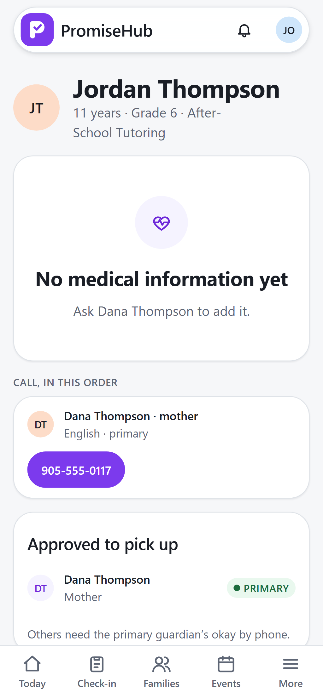
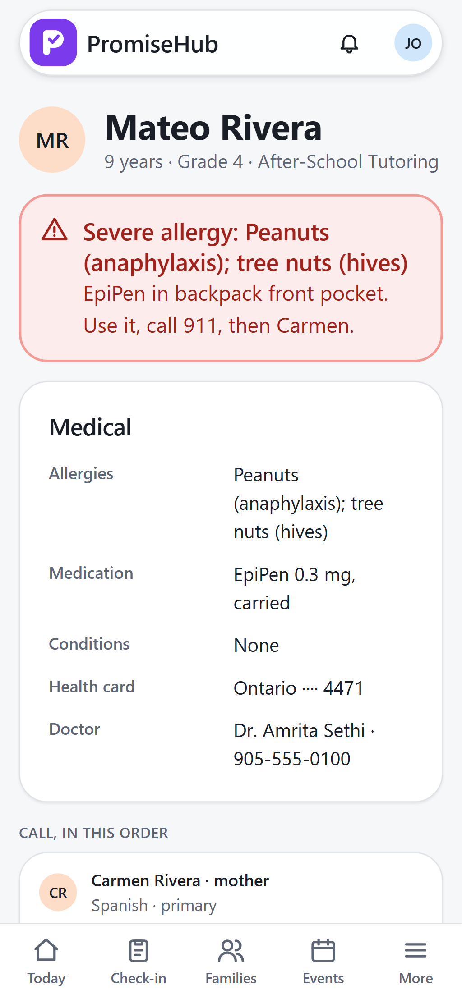

PromiseHub · Video 07
Read a Quick Card
What matters first, in an emergency, on a phone
What matters first, in an emergency, on a phone
EpiPen, 911, then Carmen; her number dials when tapped.


No medical fields in the response; who to call stays.
| Case | Answer |
|---|---|
| Site lead opens Mateo | Alert first, masked health card, call order |
| Volunteer coordinator | No medical, no alert; still who to call |
| Any open | Viewed audit entry |
| Another organization / Quick Cards off | 404 |
Next: sign children out